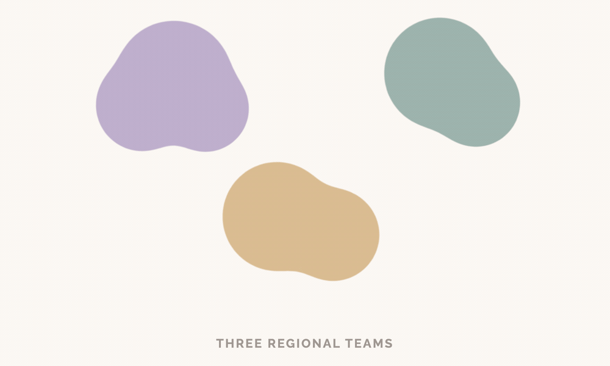

This case study contains confidential details. Enter the password to continue.
2023–2024 | Role: DesignOps Lead
When three regional UX teams merged into one global organisation, the operational challenges were predictable. The actual challenge was helping people understand who they were in the new structure.

Three autonomous regional UX teams merged into a centralised global organisation, restructured into multiple subfunctions. While regional differences existed (distinct working norms, maturity levels, and decision-making styles) the more salient challenge was establishing how newly formed subfunctions would work together.
The org structure launched before all integration details were fully worked through, a sequencing I've observed in multiple reorganisations. This meant subfunction leaders were simultaneously learning their new roles while establishing working relationships and clarifying boundaries with peers.
Core challenges:
The central question wasn't "how do we standardise processes?" It was "who are we now, and how do we work together?"
Reorgs create operational friction, but primarily create identity disruption. Process alignment fails when people don't understand their purpose within the new structure. Identity work must happen alongside, and not after operational design.
I began with structured listening before proposing solutions. 1:1 conversations across regions and subfunctions, listening sessions, and mapping both workflow patterns and emotional undercurrents.
What this revealed:
This sensemaking clarified that we needed to address both structural clarity (how work flows between subfunctions) and cultural integration (how people understand their role in an evolving structure).
I co-designed a global operating model that treated structure and culture as inseparable, addressing both "how we work" and "who we are."
Empowerment during disruption builds psychological safety, but autonomy alone doesn't create sustainable structures. Effective reorg design requires hybrid approaches: preserve individual agency while building mechanisms for organisational balance.
Tested demand-management process with volunteer teams, refined based on regional and subfunctional feedback before broader rollout.
Built standardised infrastructure for administrative work—project tracking, capacity visibility, communication channels for newly formed teams. Removing friction from operational tasks freed managers to focus on the human and relational work of supporting people through the transition.
Facilitated workshops where subfunction leaders could surface different assumptions about mandates, priorities, and boundaries. Created space for ongoing alignment as working relationships developed.
Organised global offsite focused on rebuilding shared identity (not just roadmap alignment). Created space for teams to process uncertainty alongside building new practices.
Throughout: treated the reorg as both structural work (clarifying subfunctions and their relationships) and emotional transition (supporting people through ambiguity). The challenge wasn't just implementing a new structure—it was helping an organisation establish clarity as the structure evolved.
The organisation stabilised with measurable improvements in clarity, trust, and operational effectiveness:
Operational:
Cultural:
What mattered most: Teams understood not just the new processes, but their purpose within them. The anxiety that permeated early months dissipated as people found their footing.
Process changes fail when people don't understand who they are in the new structure. Identity work isn't "soft"—it's the foundation that makes operational changes stick.
The team assignment approach taught me that empowerment during disruption creates psychological safety. But I also learned its limits: fully choice-based models can produce uneven capabilities and delivery velocity. Future iterations would blend individual agency with structured mechanisms for organisational balance.
We built good structures, but they needed constant interpretation across contexts. I underestimated how much ongoing work the operating model would require, particularly as subfunctions established their working relationships. Would now embed more intentional rituals: regular cross-subfunctional retrospectives, rotating facilitation, explicit documentation of how overlaps get resolved.
When structure launches before integration details are fully worked through, it creates sustained coordination overhead. Leaders navigating both new roles and new working relationships simultaneously face compounded complexity. Earlier attention to integration planning, even if it delays the announcement, can prevent significant downstream friction.
It's "what organisational conditions need to exist for this process to work?" Reorg success depends on clarity about how the parts fit together, not just cultural readiness, but concrete alignment on boundaries, mandates, and collaboration models.
How do you balance speed (centralised decision-making) with sustainability (distributed ownership) during organizational transitions? The tension between efficiency and autonomy requires ongoing negotiation between all stakeholders.
When should reorg structures include integration planning from the start? I've observed the pattern of "announce structure, work out details later" in multiple contexts. But early integration work risks slowing momentum. Where's the balance between speed and thoroughness?
How much structural ambiguity can organisations productively tolerate during transitions? Some evolution of boundaries and mandates may be healthy as teams learn by doing. But how much is acceptable, and when does ambiguity become harmful?
This work involved collaboration across subfunction leads, regional teams, and organizational leadership from 2023–2024. The insights came from hundreds of conversations with people navigating significant change who were generous enough to tell me what wasn't working.